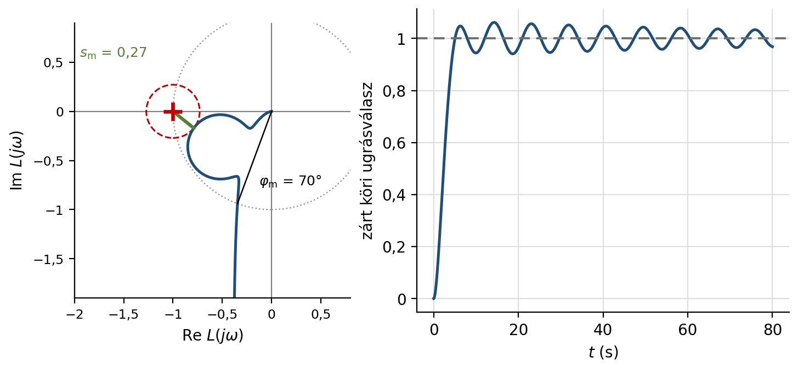
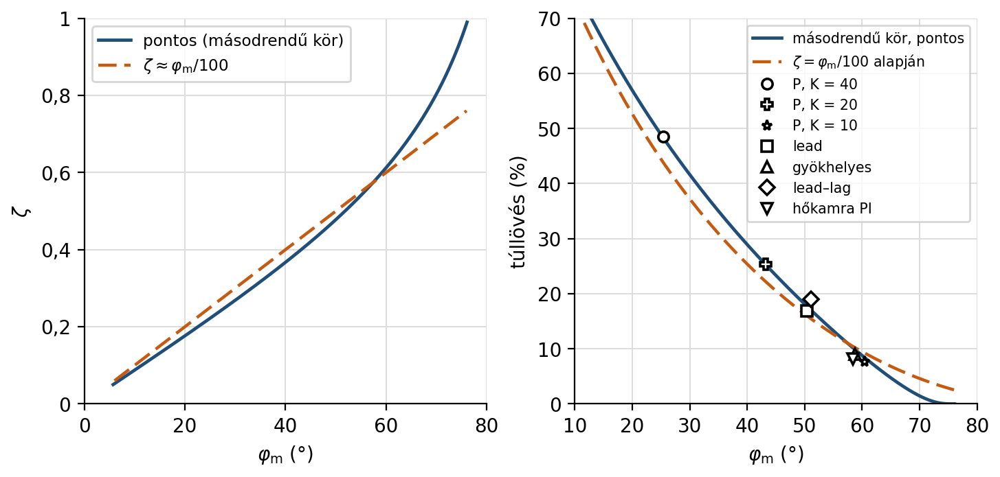
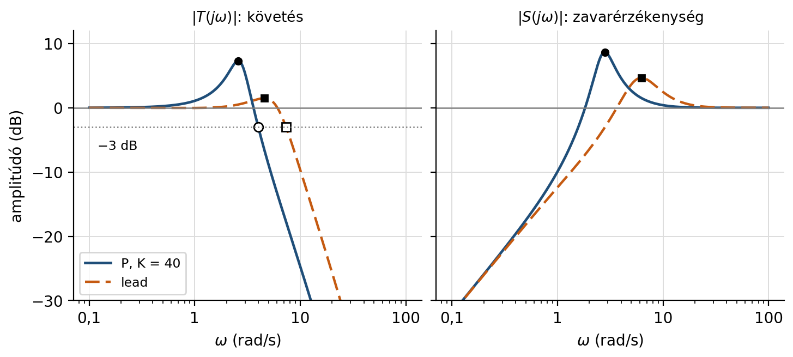

14.2 Stabilitási tartalékok és a
zárt köri frekvenciaválasz
14.2.1 Motiváció
A DC-motor szögszabályozójának két változata is stabil: az egyik egy
erősítésű P-szabályozó, a másik egy fázisemelő kompenzátor. A valódi
motor azonban sosem pontosan a modell. A forrasztópáka melege
megváltoztatja az ellenállást, a terhelés más tehetetlenséget jelent, a
digitális megvalósítás pedig késleltetést visz a körbe. Mekkora
hibát bír el a kör, mielőtt instabillá válik? És mit mond
ugyanez az adat arról, hogy mennyire leng majd a válasz?
A A Nyquist-kritérium igen–nem választ
adott. Most számokká alakítjuk azt, amit a rajzon látunk: milyen messze
van a görbe a
ponttól. Ezek a stabilitási tartalékok (stability
margins), a frekvenciatartománybeli tervezés fő mérőszámai.
14.2.2 Szemlélet
Képzeld el a stabil kör Nyquist-görbéjét, és gondold végig,
hányféleképpen érheti el a
pontot:
felfújva: ha az erősítést megszorozzuk, a görbe az
origóból nézve arányosan nő;
elforgatva: ha a kör plusz fáziskésést kap, a görbe
pontjai az óramutató irányába fordulnak;
bármilyen más módon eltolódva: a modellhiba
tetszőleges irányba mozgathatja.
Tippeld meg: elég-e, ha az erősítés kétszeres hibáját is, a fázis
-os
hibáját is külön-külön elviseli a kör ahhoz, hogy robusztusnak
nevezzük?
A három lehetőségnek három mérőszám felel meg: az erősítési, a fázis-
(illetve késleltetési) és a modulustartalék. A rajzon a motoros P-kör
látható.
Statikus változat (mint a PDF-ben)
A motoros P-kör tartalékai Bode- és Nyquist-diagramon:
erősítési tartalék, fázistartalék és a mínusz egytől mért legkisebb
távolság
A válasz a fenti kérdésre: nem. A harmadik lehetőség, hogy az
erősítés és a fázis egyszerre változik egy kicsit – ez
ellen csak a harmadik mérőszám véd.
14.2.3 Erősítési, fázis- és
késleltetési tartalék
Tegyük fel, hogy a zárt kör stabil, és a nyílt hurok stabil
(integrátor megengedett).
Definíció. Legyen
az a körfrekvencia, ahol
.
Az erősítési tartalék (gain margin)
Szavakkal: ennyiszeresére növelhető a hurok erősítése, mielőtt a
görbe átmegy a
ponton. A Bode-diagramon a 0 dB és az amplitúdó távolsága
-nál.
Definíció. Legyen
a vágási körfrekvencia (crossover frequency), ahol
.
A fázistartalék (phase margin)
Szavakkal: ennyi további fáziskésést bír el a kör az
frekvencián. A Nyquist-diagramon az egységkör és a görbe
metszéspontjának szöge a negatív valós tengelytől mérve.
Késleltetési tartalék (delay margin). Egy
nagyságú plusz holtidő az amplitúdót nem változtatja, tehát
ugyanaz marad, a fázist pedig ott
radiánnal csökkenti (Minimálfázis, holtidő és
modell a Bode-diagramból). A stabilitás határa
,
ahonnan
Ugyanakkora fázistartalék tehát gyors körnél (nagy
)
kisebb, lassúnál nagyobb időbeli késést jelent. A motor P-körében
rad,
,
így
s; a hőkamra PI-körében
és
rad/s mellett
s.
Több átmetszés. Ha a görbe többször keresztezi az
egységkört vagy a negatív valós tengelyt, minden metszéshez tartozik
tartalék. A fázistartalék a legkisebb abszolút értékű, a késleltetési
tartalék a legkisebb
.
Feltételesen stabil körnek alsó erősítési tartaléka is
van: a
hurok (A Nyquist-kritérium) erősítése
legfeljebb negyedére csökkenthető
(,
dB).
Leolvasás a Bode-diagramról, lépésenként.
Keresd meg, hol metszi az amplitúdógörbe a 0 dB-t: ez
.
Ugyanezen a függőlegesen olvasd le a fázist, és mérd meg, mennyivel
van a
fölött: ez
(ha alatta van, negatív, a kör várhatóan instabil).
Keresd meg, hol metszi a fázisgörbe a
-ot:
ez
.
Ott olvasd le, mennyivel van az amplitúdó a 0 dB
alatt: ez
decibelben.
Végül
.
Stabil körnél tipikusan
.
Ha a sorrend fordított, vagy több átmetszés van, ne a leolvasott
számokra, hanem a Nyquist-kritériumra támaszkodj.
14.2.4 Modulustartalék: a
ponttól mért legkisebb távolság
Definíció. A modulustartalék
(modulus margin, stability margin) a görbe legkisebb távolsága a
ponttól:
Az
érzékenységi függvény (sensitivity function) csúcsa
tehát pontosan a
-től
mért legkisebb távolság reciproka. Az érzékenységi függvényt, amely a
zavar elnyomását is leírja, az Érzékenységi
függvények vizsgálja részletesen.
Az
egyetlen számból mindkét klasszikus tartalékra alsó korlátot ad. A görbe
nem léphet be a
középpontú,
sugarú körbe, ezért:
a negatív valós tengellyel való metszés,
,
legalább
-re
van a
-től:
,
azaz
az egységkörön, a negatív tengelytől
szögre lévő pont távolsága a
-től
a húr hossza,
,
tehát
garantált
garantált
Gyakorlati irányértékek:
és
között,
és
között,
és
között ([S-AM]; a pontos határok alkalmazásfüggők).
Fordítva nem működik a garancia. Az alábbi huroknak végtelen az
erősítési tartaléka (a fázis sosem éri el a
-ot),
a fázistartaléka
– mégis alig
-re
halad el a
mellett:
A példa az [S-AM] könyvben szereplő típusú (ellenőrizendő; a számok
itt saját számításból valók).

Olyan hurok Nyquist-diagramja és ugrásválasza, amelynek jó a
fázis- és erősítési tartaléka, de kicsi a modulustartaléka
Egyszerre több hiba. A hőkamra PI-körének tartalékai
kényelmesnek látszanak:
,
s. Mindkettő azonban csak egyetlen paraméter hibájára vonatkozik.
Számoljuk ki, mi történik, ha a folyamat valódi erősítése és holtideje
is eltér a modelltől:
valódi folyamat
modell:
,
s
csak
nagyobb:
csak
nagyobb:
s
és
s
és
s
Az utolsó sorban egyik hiba sem éri el a saját tartalékát
(
és
s plusz holtidő), a kör mégis a stabilitás határán van. A
modulustartalék éppen az ilyen együttes eltérésekre figyelmeztet: ha
eleve kicsi, a görbének minden irányban van mozgástere. A bizonytalanság
szisztematikus kezelése a Modellbizonytalanság,
robusztus stabilitás és H∞-ízelítő témája.
14.2.5 Fázistartalék és
csillapítás, vágási frekvencia és gyorsaság
A legegyszerűbb, mégis tipikus hurok egy integrátor és egy pólus:
A zárt kör éppen a Másodrendű rendszerek
szabványalakja. Számoljuk ki a fázistartalékot.
:
.
Ez
-ben
másodfokú, pozitív gyöke
.
A fázis
,
ezért
.
Behelyettesítve:
A fázistartalék csak
-tól
függ. Jó közelítés az ökölszabály
amely
()
tartományban legfeljebb
-öt
téved; nagyobb
-nál
gyorsan romlik
(-nél
).

A fázistartalék és a csillapítás, illetve a túllövés
kapcsolata; a futó példák tervei jelölőkkel
A valódi hurkok nem pontosan ilyenek, ezért a szabály csak
ökölszabály: a lead–lag terv
-os
tartaléka mellett a túllövés
,
noha a másodrendű modell
-ot
jósol; a hőkamra
-ánál
helyett
.
A gyorsaságot a vágási frekvencia határozza meg. A másodrendű körnél
(a
dB-es zárt köri sávszélességet, bandwidth,
-vel
jelölve):
Ökölszabály:
és
(nagyságrendi becslés, a motoros tervekre
).
Ha tehát
s emelkedési idő kell,
rad/s körül tervezz.
14.2.6 Mit mondanak a számok egy
tervről?
Mielőtt tovább olvasol, tippeld meg: ha a lead kompenzátor gyorsabb
és robusztusabb a P-szabályozónál, mivel fizetünk
érte?
A jobb fázistartalék és a nagyobb sávszélesség ára a
beavatkozó jel: az alapjelugrás pillanatában
ötször–hatszor akkora feszültség. Egy 1 rad-os ugrásnál ezt a legtöbb
meghajtó nem tudja kiadni (a lineáris eredmények ilyenkor csak kis,
például
rad-os ugrásra érvényesek, ahol
tizedakkora). A beavatkozó jel is eredmény: egy tervet
a tartalékaival és az
nagyságával együtt kell megítélni. Figyeld meg azt is, hogy a gyökhelyes
tervnek nagyobb a késleltetési tartaléka, mint a lead tervnek, bár a
lead gyorsabb: a nagyobb
ugyanakkora fázist rövidebb idő alatt „fogyaszt el”.
14.2.7 A zárt köri
frekvenciaválasz
A tartalékok a nyílt hurokról szólnak, hatásuk a zárt kör
és
görbéin látszik.

A komplementer érzékenységi függvény és az érzékenységi
függvény amplitúdója a P- és a lead-szabályozott motornál
A sávszélesség
:
eddig a frekvenciáig követi a kimenet érdemben az alapjelet (lásd még A frekvenciaválasz fogalma).
A rezonanciacsúcs
:
nagy
erős lengést jelez az ugrásválaszban. A P-körnél
és
túllövés, a lead-nél
és
.
Az
csúcsa
:
itt a visszacsatolás felerősíti a zavarokat.
A két görbe nem független: minden frekvencián
.
Ahol
(a
alatt),
és
:
jó a követés. Ahol
,
és
:
a kör „nem szól bele”, a zaj nem jut át, de a zavart sem nyomja el. A
vágási frekvencia körül mindkettő lehet 1-nél nagyobb, és annál nagyobb,
minél közelebb halad a görbe a
-hez
–
:
nincs ingyenebéd.
Régebbi irodalomban gyakori a Nichols-diagram, amely
a nyílt hurok dB-értékét a fázis függvényében ábrázolja, és rárajzolt
görbékről olvassa le
-t.
Ma a számítógép közvetlenül számolja a zárt köri görbéket, ezért itt nem
használjuk.
A tartalék akkor jó mérőszám, ha tényleg a stabilitás határát
mutatja. Ellenőrizzük: az erősítést
-mel
szorozva, illetve
holtidőt hozzáadva éppen a határon kell lennünk; egy ezreléknyit alatta
stabil, fölötte instabil kört várunk:
for name, (L, th) in loops.items(): m = freq.margins(L, th) gain = [freq.nyquist_count(f * m.gm * L, th).stable for f in (0.999, 1.001)] delay = [freq.nyquist_count(L, th + f * m.delay_margin).stable for f in (0.999, 1.001)]print(f"{name:15s} erősítés: {gain} holtidő: {delay}")
A határ két útja. A tartaléklapon, a motor
P-körénél nyomd meg az „erősítés = g_m” gombot: a Nyquist-görbe átmegy a
-en,
a válasz tartósan leng. Térj vissza, és nyomd meg a „holtidő = τ_m”
gombot: ugyanaz a határ, de most a Bode-fázis görbült le, az amplitúdó
nem változott.
Kevés késleltetés is sok. A „plusz holtidő”
csúszkát
körülre állítva (kb.
s) olvasd le:
,
,
a túllövés
.
Váltsd a „motor P vs lead” gombbal a lead-körre, és hasonlítsd össze,
mennyi plusz késleltetést bír el másodpercben.
Lassú folyamat. A hőkamránál a
-ös
plusz holtidő több mint
s. Mit tesz a túllövéssel? Miért ennyivel nagyobb itt a
másodpercben, mint a motornál?
Alsó tartalék. A
hurkot válaszd, és csökkentsd az erősítésszorzót
-ig,
majd
-ig.
Nézd meg, merre megy a Nyquist-görbe.
14.2.11 Tipikus hibák
Tünet: a késleltetési tartalék százszoros
nagyságrendben téves. Ok: a fázistartalékot fokban
osztották
-vel.
Javítás: előbb radiánba kell váltani.
Tünet:
„,
tehát hatalmas a tartalék” – pedig 6 dB-ről volt szó (arányban 2).
Ok: a dB és az arány keverése.
Javítás: mindig írd ki az egységet;
dB
.
Tünet: jó
és
mellett a kör mégis hosszan leng és érzékeny a modellre.
Ok: a görbe a két mérési pont között közelíti meg a
-et.
Javítás: vizsgáld
-t
is.
Tünet: a
szabályból pontos túllövést várnak. Ok: a szabály egy
integrátor + egy pólus hurokra érvényes; zérusok, lassú dipólus
(lead–lag) vagy holtidő módosítja. Javítás: a végső
tervet szimulációval ellenőrizd.
Tünet: a tartalékokat a zárt kör
Bode-diagramjáról olvassák le. Ok: a fogalmak a nyílt
hurok
átviteléhez tartoznak. Javítás: a margins
bemenete
.
Tünet: a tartalékok pozitívak, a kör mégis
instabil. Ok: instabil nyílt hurok, vagy több
átmetszés. Javítás: előbb a Nyquist-kritériummal döntsd
el a stabilitást, a tartalék csak stabil kör robusztusságát méri.
14.2.12 Önellenőrzés
Mit mér az erősítési, a fázis- és a modulustartalék a
Nyquist-diagramon?
Hogyan számolod a késleltetési tartalékot, és miért függ
-től?
Mit garantál
?
Mire való a
szabály, és meddig érvényes?
Mit jelent, ha egy körnek alsó erősítési tartaléka van?
14.2.13 Feladatok
A1.
.
Számold ki
-at,
-et,
-t,
-et
és
-et!
A2. Egy körben
és
rad/s. Mekkora a késleltetési tartalék? Belefér-e egy
s-os kommunikációs késés?
B3. Mit garantál
a két klasszikus tartalékra?
B4. Előírás:
s, túllövés legfeljebb kb.
.
Milyen
-t
és
-et
célozz meg?
B5. A hőkamra PI-körét digitálisan valósítjuk meg; a
mintavétel és a tartás kb.
késleltetésnek felel meg. Mekkora
mellett nem veszít a kör
-nál
több fázistartalékot?
C6. Vezesd le, hogy a másodrendű hurok
fázistartaléka csak
-tól
függ, és számold ki
-re.
C7. (Programozás.) Határozd meg a hőkamra PI-körének
,
,
,
értékét saját kóddal (scipy.optimize.brentq), és vesd össze
a margins eredményével!
14.2.14 Rövid összefoglaló
A stabilitási tartalékok a Nyquist-görbe
-től
való távolságát mérik:
(erősítés),
(fázis),
radiánnal (késleltetés),
(modulus). Az
garantálja, hogy
és
;
fordítva nem. Több átmetszésnél alsó erősítési tartalék is lehet.
Továbbvitt eredmény: a tartalékok és a
margins függvény; a
ökölszabály
(),
,
.
14.2.15 Megoldások
14.2.15.1 Válaszok az önellenőrző
kérdésekre
Az erősítési tartalék a sugárirányú (felfújás), a fázistartalék az
elfordítás, a modulustartalék a legrövidebb tetszőleges irányú
távolságot méri.
radiánnal; ugyanaz a holtidő nagyobb frekvencián több fázist vesz
el.
és
.
A zárt kör csillapításának (így a túllövésnek) gyors becslésére; kb.
-ig.
Az erősítés csökkentése is instabillá teheti a
kört.
A1.
:
,
,
.
:
.
;
s.
A2.
s. A
s belefér, de a fázistartalékból
rad
-ot
elvesz, a maradék
már lengő választ ad.
B3.
;
.
B4.
rad/s. A
túllövés
,
ezért
.
B5.
rad,
:
s.
C6. A levezetés a szövegben:
nem tartalmaz
-et,
így
is csak
-tól
függ.
:
,
.